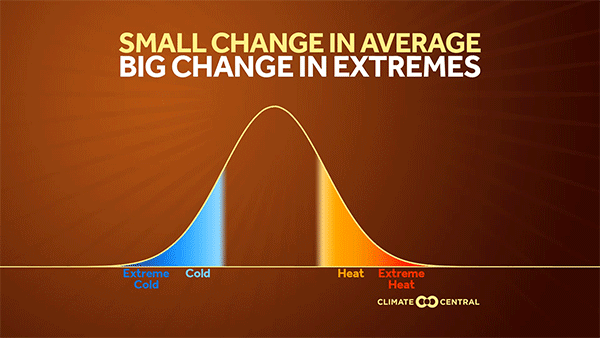
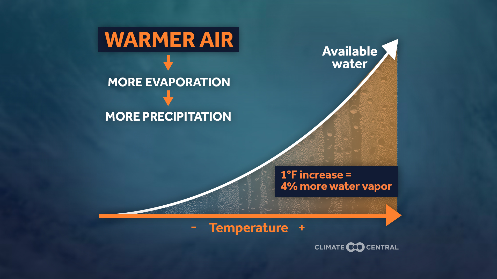

CHOOSE YOUR PATH
Extreme weather looks different depending on how you view it.
Select a topic. Return here whenever you want to explore another.
📍Summer 2021
DIFFERENT REGIONS
Same summer. Different extremes.
PACIFIC NORTHWEST · JUNE 2021
Extreme heat
A persistent heat dome pushed temperatures far beyond typical early-summer conditions across the Pacific Northwest.
Map: NASA ECOSTRESS land-surface temperature, June 25, 2021. Land-surface temperature is the temperature of the ground—not air temperature.
SAME SEASON+DIFFERENT PLACE=DIFFERENT EXTREME
🔬
CLIMATE LENS
What changes the odds?
Choose a visual to explore how climate influences extreme weather.

1Warmer averageThe starting point shifts.
→2Hot threshold reached more oftenThe extreme threshold stays fixed.
→3More extreme heatMore days land in the extreme range.
Higher baseline → extreme heat becomes easier to reach.

1Warmer airMoisture capacity increases.
→2More water vapor availableStorms can draw from a larger supply.
→3Heavier downpours possibleWhen the right storm conditions occur.
More atmospheric moisture → heavier precipitation can become more likely or intense.
SAME REGION, DIFFERENT SEASONS
Willamette Valley · 2021
Move through the year to see how the extreme-weather picture changes.FEBRUARY 2021
Ice storm
Freezing rain coated trees, roads, and power lines with damaging ice.
Climate connection: still being studied for regional ice-storm frequency.
📈Observed regional data
THE BIG PICTURE
What changes across decades?
Choose the same two extremes you explored earlier—now at the regional scale.
NORTHWEST · SUMMER · 1910–2020
How often did extreme heat cover more than half the region?
NOAA's measure: a summer counts here when daytime highs in the top 10% of the historical record affected more than 50% of the Northwest.
FIRST 90 YEARS
3 of 90
≈ 3% of summers
About 1 in 30 summers
→
FINAL 20 YEARS
6 of 20
30% of summers
3 in 10 summers
Extreme heat covered a large share of the Northwest much more often in recent decades.
Data: NOAA Climate Extremes Index. Northwest = Oregon, Washington, and Idaho; summer record 1910–2020. Percentages above are calculated from NOAA's reported counts (3 of the first 90 years; 6 of the final 20 years).
View NOAA's full time-series graph ↗SOUTHEAST · 1958–2021
Are the wettest days delivering more precipitation?
+37%increase
in the amount of precipitation falling on the heaviest 1% of days1958 → 2021
No “100 inches” here.The 37% is a percent change in the amount of precipitation contributed by the region's heaviest 1% of precipitation days—not a rainfall total.
The Southeast's heaviest precipitation days became wetter over this period.
Data: Fifth National Climate Assessment / NOAA Climate.gov. Southeast regional change in total precipitation falling on the heaviest 1% of days, 1958–2021.
View NOAA's U.S. regional map ↗
☀️ NorthwestDifferent hazard, different region—same question:🌧️ Southeast
What changes when we stop looking at one event and examine decades of observations?
🧭
YOUR REGION
Now make it local.
Look across time
Explore long-term temperature or precipitation patterns for your state or county.
Open Climate at a Glance ↗📓
NEXT STEP
Record what you found.
Complete the Extreme Weather entry in My Garden Observation Journal.
Open My Garden Observation Journal